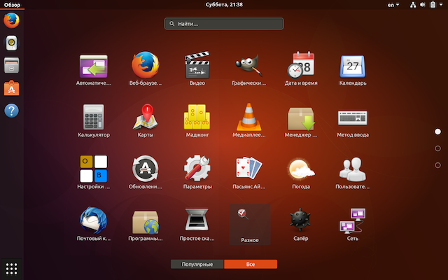
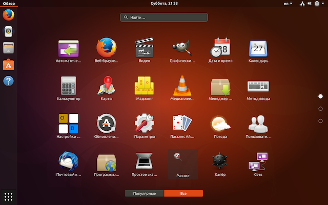
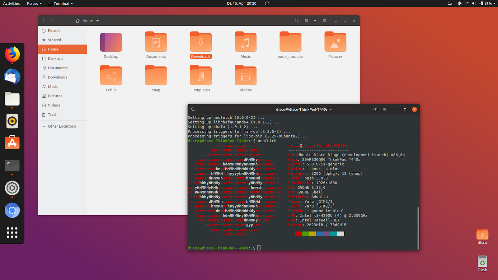

This is UBUNTU |
|
|---|---|
|
Ubuntu is an open source software operating system that runs from the desktop, to the cloud, to all your internet connected things
The world’s most popular operating system across public clouds and OpenStack clouds
The fastest way to go from development to production in IoT